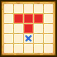

| Lv: | 130 |
|---|---|
| HP: | 1081 |
| MP: | 361 |
| ATK: | 549 |
| DEF: | 329 |
| AGL: | 488 |
| WIS: | 139 |
| Move: | 3 |
| Weight: | -- |
| Weaknesses: | |
|
/ | |
|
|---|---|---|---|---|---|
| Resistances: | |
/ | |
|
|
| Immunities: | |
| Abilities | ||||||
|---|---|---|---|---|---|---|
| Level | Type | Name | MP | Element | Range | Description |
| 1 |  |
Buff | 16 |  |
 1-2 (incl. self) |
Greatly raises 1 ally's DEF for 3 turns |
| 22 |  |
Zephyr Blade | 32 |  |
 Fan (S) |
Deals minor Woosh-type damage (80% potency) to all enemies in area of effect 2 times, rarely lowers Woosh Res for 3 turns |
| 42 |  |
Blizzard Blade | 49 |  |
1-2 |
Deals minor Crack-type damage (75% potency) to 1 enemy 4 times |
| Base Perks | ||
|---|---|---|
| Level | Name | Description |
| 1 | Chivalric Power | When summoned: Raises ATK for 3 turns |
| 80, 90, 100, 110, 120, 130 | Blizzard Blade potency +10% | Raises Blizzard Blade potency by 10% |